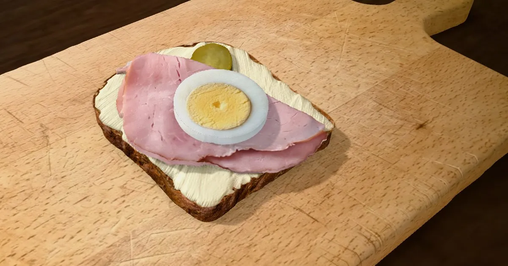

Play with it · browser toy
Sandwich Simulator: spread butter, stack toppings, photograph your sandwich
A tiny German web toy: drag toppings onto bread, and wobbly ones slide off.
HN 133 ptsWorks on phones
Read the story
Stullensimulator (a Stulle is a German open sandwich) is a small, oddly satisfying web toy. Tap the jar so the knife picks up spread, swipe across the bread to butter it, then drag toppings up from the tray and turn them by the handle (the mouse wheel works too).
There's light physics: the page warns that if a topping wobbles, it slides off when you let go. Drag a topping off the bread and it's gone. The red button takes a photo, and “Keep” gives your sandwich a number and its own link to share.
The interface is in German, but it's all tapping and dragging, so you don't need to read it. It reached the Hacker News front page with 133 points overnight.
TRY IT
open https://stulle.app/